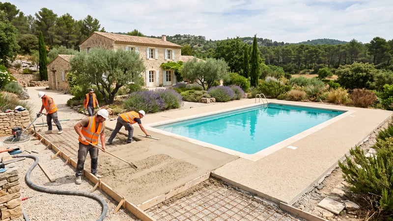

Refaire une plage de piscine : revêtements, prix au m² et pièges à éviter

Refaire une plage de piscine coûte 170 à 285 €/m² tout compris en 2026 dans le pays d'Aix, dépose, préparation du support, dalle et revêtement inclus, soit 6 800 à 11 400 € pour les 40 m² d'une plage courante, margelles en sus. La plage vieillit rarement par son revêtement : elle se fissure et s'affaisse parce que le remblai autour du bassin a tassé, parce que la pente renvoie l'eau vers le bassin ou parce que le joint avec la margelle a été oublié. Ce guide compare les revêtements, détaille le support qui fait tenir n'importe lequel d'entre eux, chiffre un chantier complet et précise ce que couvre notre assurance.
Pourquoi une plage de piscine se dégrade
Après la construction d'un bassin, la tranchée périphérique est rebouchée avec les déblais, souvent en vrac. Ce remblai tasse pendant deux ans : une plage posée dessus dans les mois qui suivent se creuse le long du bassin, les dalles basculent et les joints s'ouvrent. Le deuxième coupable est la pente. Une plage doit évacuer l'eau de pluie et les éclaboussures vers l'extérieur, à 1,5 à 2 % ; sans pente, ou avec une pente vers le bassin, l'eau chargée de poussière rejoint le filtre et stagne au pied des margelles, qui se déchaussent. Le troisième est thermique : en Provence, un dallage sombre dépasse 60 °C en surface l'après-midi et se dilate ; sans joint de dilatation entre la margelle et la plage, c'est l'une ou l'autre qui casse.
Refaire une plage, c'est donc d'abord refaire son support. Un revêtement neuf sur un remblai qui n'a pas fini de tasser dure deux étés.
Les revêtements de plage comparés
| Revêtement | Prix au m² | Points forts | Points faibles |
|---|---|---|---|
| Béton désactivé | 70 à 120 € | Antidérapant, chauffe moins qu'une pierre sombre, sans joint | Aspect minéral, reprise difficile en cas de fissure |
| Dallage pierre naturelle | 90 à 180 € | Le rendu provençal, durable, réparable dalle par dalle | Selon la pierre : certaines chauffent ou se tachent |
| Carrelage extérieur sur plots | 80 à 150 € | Démontable, réseaux accessibles dessous | Demande un support parfaitement réglé |
| Résine drainante (moquette de pierre) | 80 à 140 € | Sans joint, perméable, agréable pieds nus | Sensible à la qualité du support, reprise visible |
| Margelles seules | 60 à 150 €/ml | Pierre reconstituée ou naturelle | À poser avant la plage, jamais après |
| Préparation du support seule | 25 à 50 € | Décaissement, grave compactée, drainage, pente | Invisible une fois la plage posée, et pourtant décisive |
Deux lectures de ce tableau. La première : les revêtements se tiennent dans une fourchette assez serrée, et le choix se fait sur l'usage, pas sur le prix. Une famille avec de jeunes enfants préférera la résine drainante ou le désactivé, qui ne glissent pas mouillés ; un propriétaire qui veut pouvoir remplacer une dalle choisira la pierre. La seconde : la ligne « préparation du support » est celle qu'on supprime des devis pour baisser le prix, et celle qui fait durer tout le reste.
Le support : ce qui fait tenir la plage
Quel que soit le revêtement, la structure est la même sur un terrain provençal :
- Dépose de l'ancienne plage : 25 à 40 €/m² pour un dallage ou une dalle non armée, évacuation comprise.
- Purge du remblai le long du bassin, sur 40 à 60 cm de large, et remplacement par une grave compactée par couches de 20 cm. C'est l'opération qui supprime les tassements.
- Fond de forme en grave 0/31,5 compactée, 15 à 20 cm, réglé avec la pente définitive de 1,5 à 2 % vers l'extérieur.
- Drainage en périphérie extérieure de la plage : un caniveau à grille (25 à 45 €/ml) ou une tranchée drainante qui éloigne l'eau du bassin et des margelles.
- Dalle béton de 12 cm ferraillée (50 à 75 €/m²) pour un dallage collé, un désactivé ou une résine ; lit de pose réglé pour des dalles sur plots.
- Joint de dilatation entre la margelle et la plage, et tous les 4 à 5 mètres sur un désactivé.
Comptez 25 à 50 €/m² pour l'ensemble de cette préparation hors dalle, davantage si l'accès impose de tout passer à la brouette motorisée. Sur un terrain en pente, la plage côté aval demande un muret de soutènement ou un enrochement bas pour retenir la plateforme : c'est le même métier que le terrassement du bassin, et notre guide du terrassement de piscine en détaille les contraintes locales.
Une plage de piscine à refaire ?
STP Terrassement prépare le support, le drainage et la plage de votre piscine dans le pays d'Aix et jusqu'à Marseille. Plages et margelles jusqu'à 50 m² sont couvertes par notre décennale.
Pressé ? 07 45 14 20 49 ou WhatsApp
Prix complet d'une plage de piscine de 40 m²
Une plage de 40 m² autour d'un bassin de 8 × 4 m, à refaire entièrement, avec 24 mètres linéaires de margelles :
| Poste | Base | Budget TTC |
|---|---|---|
| Dépose de l'ancien dallage et évacuation | 40 m² à 25 à 40 € | 1 000 à 1 600 € |
| Préparation du support (purge, grave, pente, drainage) | 40 m² à 25 à 50 € | 1 000 à 2 000 € |
| Dalle béton 12 cm ferraillée | 40 m² à 50 à 75 € | 2 000 à 3 000 € |
| Margelles en pierre reconstituée | 24 ml à 60 à 150 € | 1 450 à 3 600 € |
| Revêtement : béton désactivé | 40 m² à 70 à 120 € | 2 800 à 4 800 € |
| Total | 8 250 à 15 000 € |
Hors margelles, le chantier revient à 6 800 à 11 400 €, soit 170 à 285 €/m² de plage. Le même chantier en résine drainante se situe entre 8 650 et 15 800 € margelles comprises, en pierre naturelle entre 9 050 et 17 400 €. Si le support existant est sain, ce qui se vérifie en ouvrant deux sondages le long du bassin, la dépose et la préparation disparaissent et le budget tombe de moitié : c'est le cas d'une plage de moins de dix ans dont seul le revêtement est fatigué.
Délais, saison et autorisations
Une réfection complète prend une à deux semaines : deux jours de dépose et de terrassement, le temps de séchage de la dalle (sept jours minimum avant de poser dessus), puis deux à quatre jours de revêtement. La bonne saison est l'automne ou le printemps : en plein été, le béton sèche trop vite et le désactivé se rate ; en hiver, les reprises de gel sont rares en Provence mais la pluie bloque le compactage. Côté urbanisme, une plage ne modifie pas l'emprise de la piscine déclarée ; seule une surface imperméabilisée nouvelle importante, ou un règlement de lotissement, peut imposer une déclaration. Le point à vérifier est plutôt le coefficient de pleine terre du PLU, qui limite la part de terrain imperméabilisée : une résine drainante ou des dalles sur gravier comptent souvent comme perméables.
Ce que couvre notre assurance sur une plage
L'attestation décennale de STP Terrassement, délivrée par SMA, couvre explicitement les plages et margelles autour de piscines privatives jusqu'à 50 m², ainsi que les terrasses extérieures de même surface. La construction du bassin lui-même n'entre pas dans notre métier : nous réalisons le terrassement, le support, le drainage et la plage, et nous travaillons en coordination avec le pisciniste pour les margelles et les réseaux. Au-delà de 50 m², nous le disons avant le devis. Nous intervenons sur tout le pays d'Aix (Aix-en-Provence, Puyricard, Éguilles, Venelles, Luynes, Les Milles), à Gardanne, Bouc-Bel-Air et jusqu'à Marseille.
Les erreurs qui font refaire une plage deux fois
- Poser les margelles après la plage. Elles doivent être posées d'abord, collées sur le bord du bassin, la plage venant s'y raccorder avec son joint.
- Un désactivé sans joints. Au-delà de 4 à 5 m sans joint de fractionnement, la dalle choisit elle-même où se fissurer.
- Une pierre sombre non testée. Posez une dalle au soleil un après-midi de juillet avant de commander 40 m² : certaines pierres sont impraticables pieds nus.
- Le skimmer et les réseaux non repérés. Une plage coulée sur un réseau non protégé par un fourreau condamne toute réparation future.
- L'eau du filtre rejetée sur la plage. Le contre-lavage doit avoir son exutoire ; sinon il lessive le support côté local technique.
Questions fréquentes
Quel est le prix pour refaire une plage de piscine ?
Comptez 170 à 285 €/m² tout compris en 2026 (dépose, support, dalle et revêtement), selon le revêtement et l'état du support, soit 8 250 à 15 000 € pour une plage de 40 m² refaite entièrement en béton désactivé avec ses 24 ml de margelles. Si le support est sain et que seul le revêtement est à changer, le budget tombe à 70 à 180 €/m² selon le matériau.
Quel revêtement choisir pour une plage de piscine en Provence ?
Le béton désactivé (70 à 120 €/m²) et la résine drainante (80 à 140 €/m²) ne glissent pas et chauffent moins qu'une pierre sombre ; la pierre naturelle claire (90 à 180 €/m²) offre le rendu provençal et se répare dalle par dalle. Évitez les pierres sombres et les carrelages lisses, brûlants et glissants mouillés.
Quelle pente pour une plage de piscine ?
1,5 à 2 % vers l'extérieur du bassin, c'est-à-dire 1,5 à 2 cm par mètre. L'eau de pluie et les éclaboussures ne doivent jamais retourner vers le bassin ni stagner au pied des margelles. La pente se donne au fond de forme, pas en rattrapant l'épaisseur du revêtement.
Faut-il une dalle béton sous une plage de piscine ?
Oui pour un dallage collé, un béton désactivé ou une résine drainante : une dalle de 12 cm ferraillée (50 à 75 €/m²) sur grave compactée. Les dalles sur plots ou sur lit de gravier s'en passent, à condition d'un support parfaitement réglé et d'un remblai qui a fini de tasser.
Combien de temps après la construction du bassin peut-on faire la plage ?
Le remblai périphérique tasse pendant un à deux ans s'il a été rebouché en vrac. Soit on attend, soit on le purge et on le remplace par une grave compactée par couches de 20 cm, ce qui permet de poser la plage dans la foulée du bassin. La seconde solution coûte 25 à 50 €/m² de plage et supprime le risque.
Une plage de piscine est-elle couverte par la garantie décennale ?
Celle de STP Terrassement l'est, pour les plages et margelles autour de piscines privatives jusqu'à 50 m², selon notre attestation SMA. Vérifiez ce point sur l'attestation de toute entreprise : beaucoup de polices de maçonnerie ou de paysage excluent les abords de piscine.
Peut-on poser une plage de piscine sur l'ancien dallage ?
Seulement si l'ancien support est sain, plan et sans affaissement le long du bassin, ce qui se vérifie avec deux sondages. Une résine drainante ou un carrelage sur plots peuvent alors venir dessus. Sur un dallage fissuré ou creusé, la dépose (25 à 40 €/m²) est le seul choix durable.